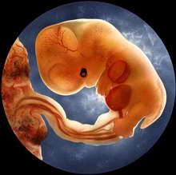

Genetic Engineering
- Genetics Introduction
- Genetic Basics
- Engineering Methods
- Human Cloning
- Eugenics
- Designer Babies
- Mapping The Genome
- Genetics and Religion
- Disease Elimination
- Longevity
- Capacity
- Adaptability
- Fashion
- Physical Attraction
- Stem Cells Revealed
- Stem Cells Controversy
- Human Rights
- The Genetic Brain
- Human Speciation
Genetic Engineering

Designer Babies
Most of us have seen the term 'designer baby' used by the media. The term conjures up images of couples sitting down with a catalogue and carefully selecting each feature, characteristic and trait one by one; sex, eye and hair colour, height, weight, talents, definitely not the father's nose. The whole idea is both exciting and frightening and most certainly rife with ethical issues. The term 'designer baby' is a misnomer, unless your crediting nature as the architect. Within the constraints of current scientific capabilities a more real term might be 'Selected Baby'. The scientific reality is far removed from the media fervour. You can select an embryo with the right chromosomes to produce the child of your chosen sex or have the embryo screened for a potential hereditary genetic disorders, or choose an embryo that is a genetic match for a sibling who already has a genetic disorder, but anything else is pure hypothesis.
The Science
There are actually several different methods that can be used to try to ensure the sex of the baby and they're not all new or scientifically proven;
Sperm Sorting - taking the sperm of the father and separating them into male and female chromosome carriers and then artificially inseminating the mother with the 'right' sperm. IVF can also be used to fertilize the egg and get a great pregnancy results.
PreNatal Diagnosis - An ultrasound examination or an amniocentesis test can be used to determine the sex of the fetus. Of course the only way to avoid giving birth to a baby of the 'wrong' sex under these methods is to terminate the pregnancy.
Traditional Methods - like eating dairy food for a girl or salty food for a boy, making sure you conceive at the right time or even making sure you're in the right position when you conceive. There are also quite a lot of methods for checking the sex of the fetus like the needle test, take a threaded needle and get someone to hold it over your palm, if the needle swings back and fro it's a girl, if it spins in a circle it's a boy. There isn't a lot of scientific evidence available on the reliability of these methods.
Pre-Implantation Diagnosis - Using current
scientific methods inevitably means that if
a person wants to have a child of the sex of
their choice then they will need to undergo
In Vitro Fertilization (IVF) treatment. An unfertilized
eggs will be removed from the women, fertilized
in a petri dish and then brought to a zygote
(eight cell) stage at which point cells are
removed and tested using a technique know as
Preimplantation Genetic Diagnosis or Selection
(PGD/PGS). The same technique is more commonly
used for testing
for genetic disorders. Only specific disorders
can be tested for, there is no generic test
available as a 'catch all'. Therefore it is
necessary for a disorder to be pre-identified
i.e. it is know that the parents are likely
to pass on the disorder or disease to the child.
Future Science
Above is outlined what is currently scientifically
possible and as we can see it is possible to
identify certain genetic anomalies that indicate
the presence of a predefined genetic disorder
or disease and to identify a male or female
embryo, but this page is suppose to be about
'designer babies'. Within the realms of current
scientific capabilities creating a truly designed
baby is simply not possible, some knowledge
exists as theories and some experimentation
with animals has taken place, but so far to
the best of our knowledge no-one has dared to
attempt to genetically design a human.
So what needs to be discovered to enable the parents of the future to sit down with their catalogue and tick the hair, eyes, nose, talents boxes?
Scientist will need to do a lot more work on
identifying and isolating the specific genes
that control the growth and development of each
individual feature, trait, characteristic or
talent. Then they will need to work out how
to alter the DNA so that the child matches the
tick boxes. Now, we know that the formation
of the human is a highly complex process of
interaction and interweaving and not simply
a case of take this gene, change it and hey
presto the baby that was going to have green
eyes will now have brown eyes. There is a great
deal of uncertainty and fear about what might
happen once we start to 'mess around' with our
offspring's DNA, but it probably will happen
eventually and parents are likely to be able
to sit down and start ticking those boxes.
The Law
Most countries allow sperm sorting, and prenatal diagnosis is common even expected practice when used as a medical tool and therefore not subject to the same stringent scrutiny under law. Traditional methods are not generally affected by law either.
Laws governing the use of PGD for specifically for non-medical sex selection vary around the world. In some countries such as the USA and Australia it's 'not illegal'. In the USA the American Society for Reproductive Medicine (ASRM), who function as an advisory service on matters ethical in lieu of statutes governing reproductive technologies, concluded that physicians should be free to offer pre-conceptive methods of sex selection, if found to be safe and effective, to couples desiring "gender variety" under specified conditions (ASRM Ethics Committee 2001). In other
countries PGD and sex selection is subject to state laws and is permitted where the sex of the child is connected to a genetic disorder i.e. the disorder is only passed on to male children: These include
• United Kingdom
• Denmark
• Italy
• Portugal
• Spain
• New Zealand
• Germany
However the exact nature of the law varies greatly from country to country and is invariably subject to continuous debate and update. For example in
Germany the law allows for prenatal diagnosis testing of an embryo for a genetic disease (note that an embryo i.e. fertilized egg and not an unfertilized egg can be tested) and if the embryo is found to have a disorder or disease then the pregnancy can be terminated without time limit.
In the United Kingdom the law says that PGD can be used to determine if an embryo has a genetic disorder or disease, or is a match for a sibling that has a genetic disorder or disease and further that if there is a high risk of a gender specific genetic disorder or disease then the sex can be tested for.
The Debate
People have been seeking to create designer babies for centuries. A few of the methods for sex selection have been outlined above and there are more options available, ask around and you will find plenty of women willing to share their particular method. Character and trait selection hasn't always been done using scientifically proven methods but it has been around for as long as the human race has been procreating. In many respects human nature seeks to choose those characteristics which we find most attractive, we choose the partner we wish to bred with, someone who has the features we like, someone we approve of, has traits or characteristics we desire in our children. Now this process does not necessarily takes place on an wholly conscious level but lets not fool ourselves into thinking it all pure chance. Certainly in prosperous societies we have few qualms about modify ourselves to suit fashion, desires and happiness; if you want to be a surgeon and get rich choose plastic surgery, if your feeling a little under par go to the chemist and pick up a bottle of pills to alter your mood or increase your sex drive or keep you young and vigorous. Why is it so odd that we should desire to imbue our offspring with such things? Why is it that once we bring scientific methodologies into the picture that hackles get raised?
First, lets not forget that most of the methods
require that some embryos be discarded and that
is a debate that rages across many areas and
is discussed fully elsewhere
on this site. Alongside the right to life issue
are a couple of other debates, these include;
global and local gender imbalance, fear of a
new eugenics movement, PGD and disease/disorder
identification - is it all good?.
Global and Local Gender Imbalance
We live in a sexist society, most cultures value women above men. In 1990 a Nobel prize winning economist, Amartya Sen, published a paper claiming that approximately 100 million women where 'missing', she concluded that the majority of these women were missing from Asia and North Africa and further that this was predominantly due to a lack of fundamental health and social care given to girls. Others added to Sen's conclusions by suggesting that the imbalance could also be due to infanticide and sex-specific abortion. Since then an economics graduate student, Emily Oster, has presented findings that suggest that the cause of approximately half of the 'missing women' could be a correlation between rates of hepatitis B; there is evidence to suggest that pregnant women with Hepatitis B are more likely to give birth to boys, nobody is quite sure why. Oster suggests that where Hepatitis B is more prevalent a gender imbalance occurs. The areas where Hepatitis B is more prevalent and Sen's 'missing women' seem to coincide. Oster concluded that this anomaly could account for as much as half of Sen's 'missing women'. But this still leaves an astounding 50 million women unaccounted for. In relation to the debate about the use of PGD for sex selection this number becomes very important. If we can misplace 50 million women without the use of PGD what might happen if its use for sex selection becomes commonplace? On the other hand, don't we believe in individual freedoms and the right to choose? Isn't it more important to educate society out of its current misogynistic mind set? Perhaps even, if the technology were made widely available then eventually a new balance would be found. Possibly the most important thing to remember within this debate is that sex selection is not an over the counter option. It requires fairly arduous and expensive procedures and a real desire to achieve your ends.
Fear of a New Eugenics Movement
Many ethicists see the extended use of PGD as opening the door to a new eugenics. Eugenics has been around in one form or another since the 19th century, basically it means for the betterment of society. Eugenics is a huge debate and as such is covered more extensively here on this site. But for now, in terms of PGD and the designer baby issue the key points are:
• Do parents have the right to predetermine the characteristics and traits of their offspring?
• Does society have a responsibility to control the use of PGD as a tool of eugenics?
• Who gets to decide what's good what's bad?
• How far should we be willing to go?
PGD and Disease/Disorder identification - Is it all good?
A great many of the articles that you read about genetic engineering and related areas start by pointing out that the main goal is disease elimination and that of course is good. PGD is most commonly used to identify those embryos that are carrying a genetic disease or disorder and then to discard those embryos deemed 'unsuitable' for implantation. Alongside this is the practice of prenatal testing and termination of feti with certain conditions. Scientists have discovered a good few genetic disorders that can be identified using these processes and it is now quite common practice for parents who suspect they may pass on a genetic disease or disorder to seek PGD or prenatal treatment. But is it always good and is everyone really so enthusiastic about the use of the technology?
Many disability rights groups and bioethicists have taken up the debate arguing that people with disabilities should not be seen as a group who should be eliminated from society. They argue that to decide that people with disabilities are not 'normal' is to attempt to alter the diversity of human life and to take away from society a sense of caring and consideration. They see the use of prenatal and PGD testing as a form of discrimination. Further many people argue that a number of the genetic conditions that are being tested for are conditions that do not produce symptoms until later in life and that with proper medical treatment people with some conditions can live full lives. Now of course some of the genetic disorders that are tested for are indeed horrific and can reasonably easily be justified as candidates for PGD but if we see these diseases at one end of a continuum and then diseases of later life at the other end, who should be in the position to decide the cut off point and how will societal pressures affect those making such choices?
There are other issues such as the way we view our offspring. Will children become a mere commodity designed by us to fit into our world as an accessory and not as an individual in their own right? Taken to the extreme will the use of PGD create a race of perfect unblemished stereotyped people variety only coming out of changes in fashion? Who will ultimately make the decisions about what is acceptable what is not and how can we ensure that the technology will be used responsibly?
Future Human Evolution
In terms of future human evolution PGD and as
yet unrefined associated technologies can and
probably will be used to create designer babies.
It can only be hoped that the technology will
be used responsibly. But it is possible to imagine
a society free from some of the more horrendous
genetic disorders, a society where children
can be bred for specific purposes like off planet
living, where genetic manipulation is essential
for survival. On this site we explore some of
the potential
scenarios that might require the use of
PGD and future technologies that develop out
of it.
^ Top ^